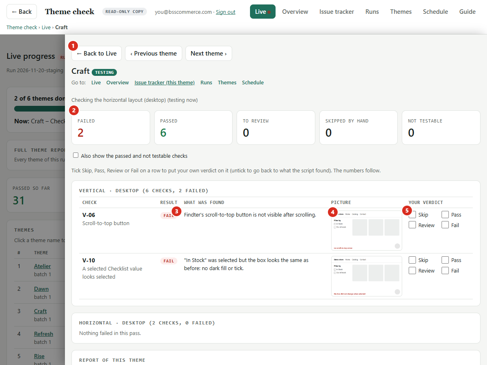
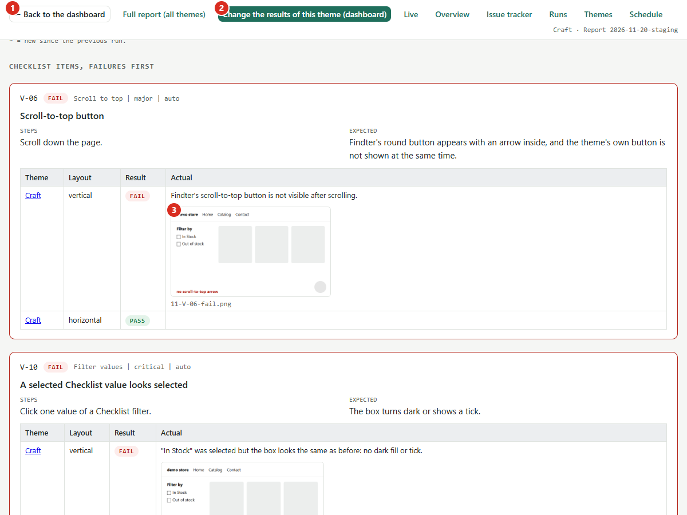
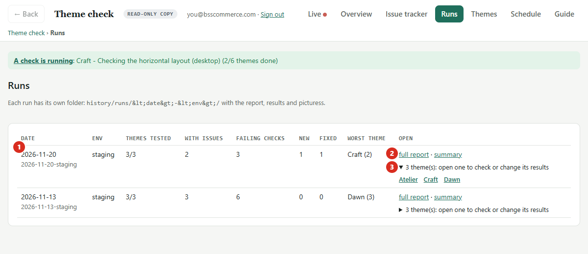
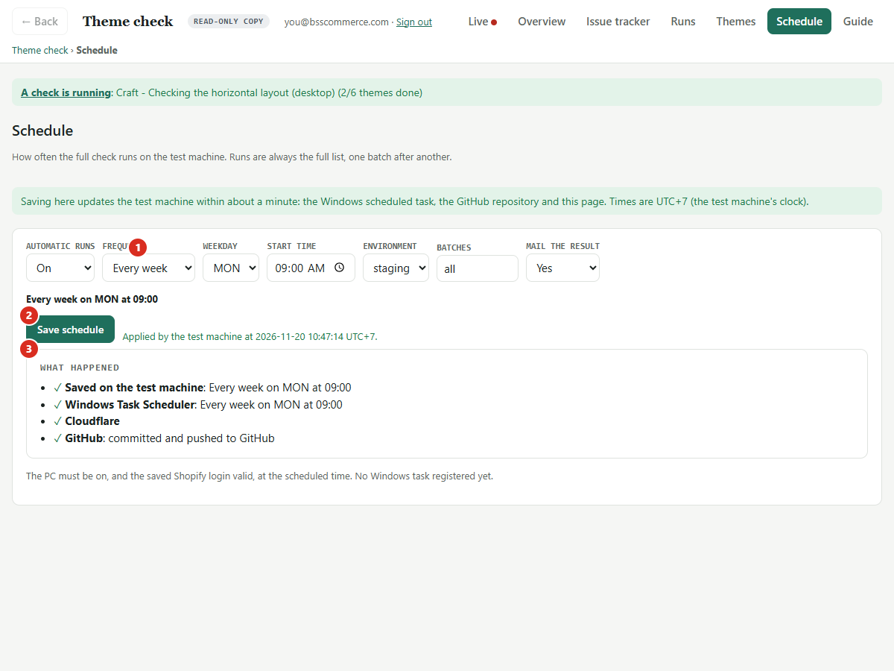

Theme check: user guide
What it is, and how to use it. About 5 minutes to read.
What this tool does
It takes Shopify themes one by one, puts Findter on each, checks that everything looks and works right, and shows you what passes and what fails, with a picture for every check.
- Open it: bss-theme-check.pages.dev. Sign in with your @bsscommerce.com Google account.
- Everyone in the company can look. Only the editors can change things (marked editors only below).
- All times are UTC+7.
1The pages

| Live | The run happening now, theme by theme. |
| Overview | The numbers of the latest run: how many fail, the worst themes, the most common problems. |
| Issue tracker | Every problem seen so far: still open or fixed, and since when. |
| Runs | Every past run. Open any theme of any run. |
| Run test | Pick some themes, a store and a browser, and test them now. |
| Themes | The list of themes to test. |
| Schedule | When the test runs by itself. |
2Watch a run: Live

What the status words mean:
| QUEUED | Waiting for its turn. |
| INSTALLING / INSTALLED | Being added to the store. The tool waits until the theme shows in the theme list and its editor opens. |
| SETUP | Editor open: turning Findter on, choosing the theme. |
| TESTING | Checking the pages. |
| DONE FAILED | Finished. FAILED means the theme could not be set up (it says why). |
The Time column counts only from the moment the theme editor opens. Installing and waiting are not counted.
3Look inside one theme, and correct a result
On Live, click a theme name. A panel opens on the right. You do not need to wait for the other themes.

- Read What was found and look at the picture. Failed checks come first.
- If the tool is wrong, or the problem is too small to matter, tick one box: Skip (ignore it), Pass, Review (someone must look), or Fail.
- Done. The numbers change at once. The report, the Overview and the Issue tracker follow in about a minute.
- Untick the box to go back to what the tool found. The tool's own answer is never lost: the row still says script said: FAIL.
- To mark a check that passed as a Fail (you checked by hand), tick Also show the passed checks first.
- Editors only. Everyone else sees the boxes greyed out.
4Reports

- Full theme report: all themes of a run in one page. Button on Live, or Runs → full report. Click a theme name in it to open that theme's own report.
- Report of this theme: only that theme. Find it at the bottom of the theme panel.
5Old runs

6Themes and schedule (editors only)

- Themes tab: add a theme, remove one, or switch one off. Press Save.
- Schedule tab: daily, weekly, or every N days. Press Save schedule.
- After Save the tool updates the test PC, the Windows timer, the website and GitHub by itself. Each step shows OK or failed.
The test PC must be on at the scheduled time. The tool needs a real Chrome window and a saved Shopify login, so it cannot run in the cloud.
7Test a few themes yourself (editors only)
- Open Run test.
- Pick the store and the browser (Chrome or Edge).
- Tick the themes. Type in Find a theme to filter, Select all shown to tick the filtered ones, Clear to start over.
- Press Run test. It starts on the test PC in its own browser. The Requests list below shows its state, and Live shows it theme by theme.
One run per store at a time. A test for a store that is busy is queued and starts by itself when the run there ends: nothing running is ever stopped. Runs in different stores go on at the same time. You can Cancel a request that has not started.
A store and browser must have been logged in once on the test PC. If not, the request is rejected and tells you the command to run.
8What the tool does to each theme
- Install the theme (one at a time) and wait until it shows in the theme list and its editor opens.
- Open the editor: turn Findter on, choose the theme.
- Vertical layout, plus Search on desktop and mobile: check.
- Switch to Horizontal: check. Open the Price filter and look at its slider.
- Switch to Off-canvas, and Mobile: check.
- Put the layout back to Vertical and delete the theme. Then the next one.
The live theme of the store is never deleted. If it is on the list, it is tested where it is.
If something looks wrong
- A result looks wrong: tick your verdict (step 3), then tell the developer which check and what you saw.
- The page says "stopped unexpectedly" or the run does not move: the test PC or the run stopped. Tell the developer.
- The boxes are greyed out: your account is not an editor.
- Lost? Press Back, or open any page from the menu.